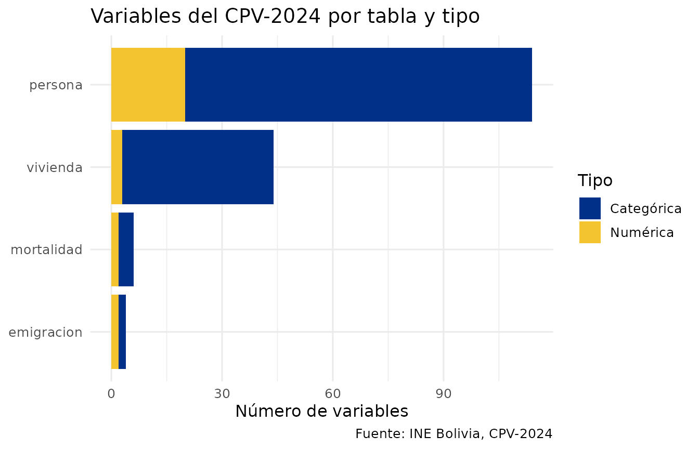
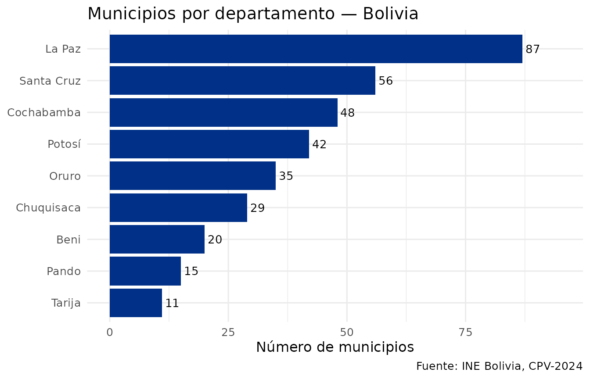
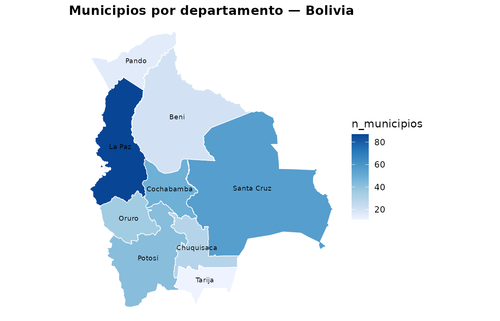

¿Qué es censosbo?
censosbo es un paquete de R que facilita el acceso a los
microdatos de los censos de Bolivia (1976, 1992, 2001,
2012 y CPV-2024), publicados por el Instituto Nacional de Estadística
(INE).
Los datos se distribuyen como archivos Parquet comprimidos, que se descargan bajo demanda y se guardan en un caché local. No es necesario descargar todo: se puede pedir solo el departamento de interés.
Censos disponibles
| Año | Función | Registros | Variables | Disco (Parquet) | RAM (aprox.)¹ |
|---|---|---|---|---|---|
| 1976 | get_poblacion_1976() |
4,613,419 | 46 | 63 MB | 83 MB |
| 1976 | get_viviendas_1976() |
1,158,482 | 28 | 7 MB | 9 MB |
| 1992 | get_personas_1992() |
6,420,792 | 54 | 135 MB | 238 MB |
| 1992 | get_viviendas_1992() |
1,706,107 | 44 | 29 MB | 43 MB |
| 1992 | get_mortalidad_1992() |
1,706,107 | 14 | 17 MB | 36 MB |
| 2001 | get_personas_2001() |
8,274,325 | 66 | 136 MB | 316 MB |
| 2001 | get_viviendas_2001() |
2,290,414 | 39 | 20 MB | 37 MB |
| 2012 | get_personas_2012() |
10,059,856 | 33 | 146 MB | 279 MB |
| 2012 | get_viviendas_2012() |
3,172,321 | 32 | 38 MB | 58 MB |
| 2012 | get_emigracion_2012() |
489,559 | 6 | 5 MB | 11 MB |
| 2012 | get_discapacidad_2012() |
342,929 | 8 | 4 MB | 8 MB |
| 2024² | get_personas_2024() |
11,365,333 | 118 | 283 MB | ~490 MB |
| 2024² | get_viviendas_2024() |
4,490,488 | 48 | 55 MB | ~111 MB |
| 2024² | get_emigracion_2024() |
500,914 | 8 | 2 MB | ~7 MB |
| 2024² | get_mortalidad_2024() |
382,731 | 10 | 2 MB | ~5 MB |
¹ Tamaño al cargar la tabla completa con collect() sin
filtros, medido desde metadatos Parquet. ² Persona 2024 está
particionada en 9 archivos por departamento (4–77 MB cada uno). Disco y
RAM muestran el total; en la práctica se descarga solo el/los
departamentos necesarios.
El formato Arrow (defecto) mantiene los datos en
disco hasta que se llama collect(). Las tablas del CPV-2024
se unen con la clave compuesta idep + iprov + imun + i00
(identificador de hogar).
Diccionario de variables
El paquete incluye diccionarios completos de los cinco censos (1976, 1992, 2001, 2012 y CPV-2024) con etiquetas en español, disponibles sin necesidad de descargar nada:
# Distribución de variables por tabla y tipo
codebook_meta |>
count(tabla, tipo) |>
ggplot(aes(x = reorder(tabla, n), y = n, fill = tipo)) +
geom_col() +
coord_flip() +
scale_fill_manual(
values = c(categorica = "#003087", numerica = "#F4C430"),
labels = c(categorica = "Categórica", numerica = "Numérica")
) +
labs(
title = "Variables del CPV-2024 por tabla y tipo",
x = NULL, y = "Número de variables", fill = "Tipo",
caption = "Fuente: INE Bolivia, CPV-2024"
) +
theme_minimal(base_size = 12)
# Buscar variables relacionadas con educación
codebook(buscar = "educa")
#> variable
#> 1 p39_tipoest
#> 2 p41a_nivel
#> 3 p41b_curso
#> 4 p41a_nivel_act
#> 5 nivel_edu
#> 6 asiste
#> 7 gedadedu
#> etiqueta
#> 1 39. El centro o establecimiento educativo al que asiste es:
#> 2 41.A. Cuál es el último curso o año que aprobó y en que nivel educativo (Nivel)
#> 3 41.B. Cuál es el último curso o año que aprobó y en que nivel educativo (Curso o Año)
#> 4 Nivel educativo alcanzado: sistema actual (5 o más años de edad)
#> 5 Nivel educativo alcanzado agrupado (19 o más años de edad, residentes en el país y que respondieron a la pregunta)
#> 6 Asistencia educativa (residentes en el país y que respondieron a la pregunta)
#> 7 Grupo de edad según asistencia educativa (residentes en el país y que respondieron a la pregunta)
#> tabla tipo
#> 1 persona categorica
#> 2 persona categorica
#> 3 persona numerica
#> 4 persona categorica
#> 5 persona categorica
#> 6 persona categorica
#> 7 persona categorica
#> valores_codigos
#> 1 1, 2, 9, Público o de convenio, Privado, Sin especificar
#> 2 1, 2, 3, 4, 5, 6, 7, 8, 9, 10, 11, 12, 13, 99, Ninguno, Curso de alfabetización, Inicial (Pre kínder, kínder), Básico, Intermedio, Medio, Primaria, Secundaria, Técnico Medio, Técnico Superior, Licenciatura, Maestría, Doctorado, Sin especificar
#> 3 NULL
#> 4 1, 2, 3, 7, 8, 9, 10, 11, 12, 13, 99, Ninguno, Curso de Alfabetización, Inicial (Pre kínder, kínder), Primaria, Secundaria, Técnico Medio, Técnico Superior, Licenciatura, Maestría, Doctorado, Sin especificar
#> 5 1, 2, 3, 4, Ninguno, Primaria, Secundaria, Superior
#> 6 1, 2, Sí, No
#> 7 1, 2, 3, 4, 5, 6, 7, 0 - 3, 4 - 5, 6 - 11, 12 - 17, 18 - 24, 25 - 59, 60 o más
# Ver los códigos de una variable categórica
codebook_valores("p25_sexo")
#> codigo etiqueta
#> 1 1 Mujer
#> 2 2 HombreEtiquetas en los resultados
Los datos del censo usan códigos numéricos. El paquete ofrece dos funciones para hacerlos legibles:
-
etiquetar_valores()— convierte los códigos a etiquetas en español (1 → “Mujer”) -
etiquetar_variables()— renombra las columnas con sus descripciones del INE
Ambas funciones detectan automáticamente el censo a partir de los nombres de columna del data frame, por lo que funcionan igual para el CPV-2024 y para los censos históricos (1976, 1992, 2001, 2012) sin necesidad de especificar el año.
# Ejemplo con los datos de geografía incluidos en el paquete
codebook_meta |>
filter(tabla == "persona", tipo == "categorica") |>
head(5) |>
select(variable, etiqueta, tipo)
#> variable
#> 1 p24_parentes
#> 2 p25_sexo
#> 3 p28_cn
#> 4 p29_ci
#> 5 p30a_public
#> etiqueta
#> 1 24. Que parentesco tiene con la jefa o jefe del hogar
#> 2 25. Es mujer u hombre
#> 3 28. Su nacimiento está inscrito en el registro civil boliviano
#> 4 29. Tiene o tuvo cédula de identidad boliviana
#> 5 30.A. Cuando tiene problemas de salud acude a Puesto/centro/hospital de salud público
#> tipo
#> 1 categorica
#> 2 categorica
#> 3 categorica
#> 4 categorica
#> 5 categoricaEn los siguientes ejemplos se aplican después de
collect():
# CPV-2024: detección automática
get_personas_2024(departamento = "La Paz") |>
count(p25_sexo, nivel_edu) |>
collect() |>
etiquetar_valores() # 1 → "Mujer", 2 → "Hombre"; 1 → "Ninguno", etc.
# Para reportes: también renombrar columnas
get_personas_2024(departamento = "La Paz") |>
count(p25_sexo) |>
collect() |>
etiquetar_valores() |>
etiquetar_variables() # "p25_sexo" → "25. Es mujer u hombre"
# Censos históricos: mismo flujo, sin especificar año
get_personas_1992(departamento = "07") |>
count(P03) |>
collect() |>
etiquetar_valores() |>
etiquetar_variables() # "P03" → "Es hombre o mujer"Geografía: departamentos, provincias y municipios
El paquete incluye la división político-administrativa completa de Bolivia sin necesidad de descargar nada:
departamentos()
#> idep nombre_dep
#> 1 01 Chuquisaca
#> 30 02 La Paz
#> 117 03 Cochabamba
#> 165 04 Oruro
#> 200 05 Potosí
#> 242 06 Tarija
#> 253 07 Santa Cruz
#> 309 08 Beni
#> 329 09 Pando
geo_bolivia |>
count(idep, nombre_dep, name = "municipios") |>
ggplot(aes(x = reorder(nombre_dep, municipios), y = municipios)) +
geom_col(fill = "#003087") +
geom_text(aes(label = municipios), hjust = -0.2, size = 3.5) +
coord_flip() +
ylim(0, 95) +
labs(
title = "Municipios por departamento — Bolivia",
x = NULL, y = "Número de municipios",
caption = "Fuente: INE Bolivia, CPV-2024"
) +
theme_minimal(base_size = 12)
# Variables de la tabla de emigración
codebook(tabla = "emigracion")
#> variable etiqueta tabla tipo
#> 1 e203_sexo 20.3. La persona es: emigracion categorica
#> 2 e204_ansal 20.4. En qué año salió del país emigracion numerica
#> 3 e205_edad 20.5. A qué edad se fue emigracion numerica
#> 4 pais_destino_cod 20.2. En que país vive actualmente emigracion categorica
#> valores_codigos
#> 1 1, 2, 9, Mujer, Hombre, Sin Especificar
#> 2 NULL
#> 3 NULL
#> 4 4, 8, 12, 16, 20, 24, 28, 31, 32, 36, 40, 44, 48, 50, 51, 52, 56, 60, 64, 68, 70, 72, 76, 84, 90, 92, 96, 100, 104, 108, 112, 116, 120, 124, 132, 136, 140, 144, 148, 152, 156, 158, 162, 166, 170, 174, 175, 178, 180, 184, 188, 191, 192, 196, 203, 204, 208, 212, 214, 218, 222, 226, 231, 232, 233, 234, 238, 239, 242, 246, 248, 250, 254, 258, 260, 262, 266, 268, 270, 275, 276, 288, 292, 296, 300, 304, 308, 312, 316, 320, 324, 328, 332, 336, 340, 344, 348, 352, 356, 360, 364, 368, 372, 376, 380, 384, 388, 392, 398, 400, 404, 408, 410, 414, 417, 418, 422, 426, 428, 430, 434, 438, 440, 442, 446, 450, 454, 458, 462, 466, 470, 474, 478, 480, 484, 492, 496, 498, 499, 500, 504, 508, 512, 516, 520, 524, 528, 531, 533, 534, 535, 540, 548, 554, 558, 562, 566, 570, 574, 578, 580, 583, 584, 585, 586, 591, 598, 600, 604, 608, 612, 616, 620, 624, 626, 630, 634, 638, 642, 643, 646, 652, 654, 659, 660, 662, 663, 666, 670, 674, 678, 682, 686, 688, 689, 690, 694, 702, 703, 704, 705, 706, 710, 716, 724, 728, 729, 732, 740, 744, 748, 752, 756, 760, 762, 764, 768, 772, 776, 780, 784, 788, 792, 795, 796, 798, 800, 804, 807, 818, 826, 831, 832, 833, 834, 840, 850, 854, 858, 860, 862, 876, 882, 887, 894, 987, 988, 991, 992, 993, 994, 995, 996, 997, 998, 999, Afganistán, Albania, Argelia, Samoa Americana, Andorra, Angola, Antigua y Barbuda, Azerbaiyán, Argentina, Australia, Austria, Bahamas, Bahrein, Bangladesh, Armenia, Barbados, Bélgica, Bermuda, Bhután, Bolivia (Estado Plurinacional de, Bosnia y Herzegovina, Botswana, Brasil, Belice, Islas Salomón, Islas Vírgenes Británicas, Brunei Darussalam, Bulgaria, Myanmar, Burundi, Belarús, Camboya, Camerún, Canadá, Cabo Verde, Islas Caimán, República Centroafricana, Sri Lanka, Chad, Chile, China, Taiwán (Provincia de China), Isla Christmas, Islas Cocos (Keeling), Colombia, Comoras, Mayotte, Congo, República Democrática del Congo, Islas Cook, Costa Rica, Croacia, Cuba, Chipre, República Checa, Benin, Dinamarca, Dominica, República Dominicana, Ecuador, El Salvador, Guinea Ecuatorial, Etiopía, Eritrea, Estonia, Islas Feroe, Islas Malvinas (Falkland), Georgia del Sur y las Islas Sandwich del Sur, Fiji, Finlandia, Islas Åland, Francia, Guayana Francesa, Polinesia Francesa, Territorio de las Tierras Australes Francesas, Djibouti, Gabón, Georgia, Gambia, Estado de Palestina, Alemania, Ghana, Gibraltar, Kiribati, Grecia, Groenlandia, Granada, Guadalupe, Guam, Guatemala, Guinea, Guyana, Haití, Santa Sede, Honduras, China, región administrativa especial de Hong Kong, Hungría, Islandia, India, Indonesia, Irán (República Islámica del), Iraq, Irlanda, Israel, Italia, Costa de Marfil, Jamaica, Japón, Kazajstán, Jordania, Kenya, República Popular Democrática de Corea, República de Corea, Kuwait, Kirguistán, República Democrática Popular Lao, Líbano, Lesotho, Letonia, Liberia, Libia, Liechtenstein, Lituania, Luxemburgo, China, región administrativa especial de Macao, Madagascar, Malawi, Malasia, Maldivas, Malí, Malta, Martinica, Mauritania, Mauricio, México, Mónaco, Mongolia, República de Moldova, Montenegro, Montserrat, Marruecos, Mozambique, Omán, Namibia, Nauru, Nepal, Países Bajos, Curazao, Aruba, San Martín (parte Holandesa), Bonaire, San Eustaquio y Saba, Nueva Caledonia, Vanuatu, Nueva Zelandia, Nicaragua, Níger, Nigeria, Niue, Isla Norfolk, Noruega, Islas Marianas Septentrionales, Micronesia (Estados Federados de), Islas Marshall, Palau, Pakistán, Panamá, Papua Nueva Guinea, Paraguay, Perú, Filipinas, Pitcairn, Polonia, Portugal, Guinea-Bissau, Timor-Leste, Puerto Rico, Qatar, Reunión, Rumania, Federación de Rusia, Rwanda, San Barthélemy, Santa Elena, Saint Kitts y Nevis, Anguila, Santa Lucía, San Martín (parte francesa), San Pedro y Miquelón, San Vicente y las Granadinas, San Marino, Santo Tomé y Príncipe, Arabia Saudita, Senegal, Serbia, Kosovo, Seychelles, Sierra Leona, Singapur, Eslovaquia, Viet Nam, Eslovenia, Somalia, Sudáfrica, Zimbabwe, España, Sudán del Sur, Sudán, Sáhara Occidental, Suriname, Islas Svalbard y Jan Mayen, Eswatini, Suecia, Suiza, República Árabe Siria, Tayikistán, Tailandia, Togo, Tokelau, Tonga, Trinidad y Tobago, Emiratos Árabes Unidos, Túnez, Turquía, Turkmenistán, Islas Turcas y Caicos, Tuvalu, Uganda, Ucrania, Macedonia del Norte, Egipto, Reino Unido de Gran Bretaña e Irlanda del Norte, Guernsey, Jersey, Isla de Man, República Unida de Tanzanía, Estados Unidos de América, Islas Vírgenes de los Estados Unidos, Burkina Faso, Uruguay, Uzbekistán, Venezuela (República Bolivariana de), Islas Wallis y Futuna, Samoa, Yemen, Zambia, Caracteres aleatorios o descripción ilegible, Otro municipio, África, América, Asia, Europa, Oceanía, Otro país extranjero, No corresponde a país, No sabe, Sin EspecificarMapas coropléticos
El paquete incluye geometrías sf para los 9 departamentos
(geo_departamentos) y 336 municipios
(geo_municipios) de Bolivia, disponibles sin descarga. La
función mapa_dep() genera mapas coropléticos a nivel
departamental:
# Número de municipios por departamento (solo usa datos incluidos en el paquete)
mun_x_dep <- geo_bolivia |>
count(idep, name = "n_municipios")
mapa_dep(mun_x_dep, "n_municipios",
titulo = "Municipios por departamento — Bolivia",
mostrar_nombres = TRUE)
#> Warning: st_centroid assumes attributes are constant over geometries
#> Warning in st_point_on_surface.sfc(sf::st_zm(x)): st_point_on_surface may not
#> give correct results for longitude/latitude data
Para mapas a nivel municipal con ejemplos usando datos reales del CPV-2024, ver la viñeta Visualización en mapas.
Primera descarga de microdatos (CPV-2024)
# Descargar datos de Santa Cruz (~155 MB, se guarda en caché)
personas_sc <- get_personas_2024(departamento = "Santa Cruz")
personas_sc
#> FileSystemDataset with 1 Parquet file
#> 118 columnsEl resultado por defecto es un Arrow Dataset — los datos quedan en disco, no en RAM.
Filtros geográficos
# CPV-2024
get_personas_2024(departamento = "La Paz")
get_personas_2024(departamento = c("La Paz", "Cochabamba", "Santa Cruz"))
get_personas_2024(departamento = "Santa Cruz", provincia = "01")
get_personas_2024(departamento = "Santa Cruz", municipio = "01")
# Censos históricos — mismos argumentos
get_personas_2012(departamento = "La Paz")
get_censo(2001, "persona", departamento = "Santa Cruz", municipio = "01")Selección de variables
get_personas_2024(
departamento = "Santa Cruz",
variables = c("p25_sexo", "p26_edad", "nivel_edu")
)
# Las columnas idep, iprov, imun, i00 siempre se incluyenFormatos de retorno
# Arrow (defecto): lazy, no carga en RAM
ds <- get_personas_2024(departamento = "Santa Cruz", as = "arrow")
# tibble: trae a RAM (cuidado con departamentos grandes)
df <- get_personas_2024(departamento = "Pando", as = "tibble")
# DuckDB: conexión SQL
con <- get_personas_2024(departamento = "Santa Cruz", as = "duckdb")
DBI::dbGetQuery(con, "SELECT COUNT(*) FROM personas")
DBI::dbDisconnect(con)Uso con dplyr
Arrow es compatible con dplyr. Usa
etiquetar_valores() después de collect():
# Distribución por sexo con etiquetas
get_personas_2024(departamento = "Cochabamba") |>
count(p25_sexo) |>
collect() |>
etiquetar_valores()
#> p25_sexo n
#> <fct> <int>
#> 1 Mujer 831062
#> 2 Hombre 855433
# Grupos quinquenales de edad (usar %/% — cut() no es compatible con Arrow)
get_personas_2024(departamento = "Santa Cruz") |>
filter(!is.na(p26_edad), !is.na(p25_sexo)) |>
mutate(grupo_edad = (p26_edad %/% 5L) * 5L) |>
count(grupo_edad, p25_sexo) |>
collect() |>
etiquetar_valores()Consultas SQL con DuckDB
library(DBI)
con <- get_personas_2024(departamento = "Santa Cruz", as = "duckdb")
DBI::dbGetQuery(con, "
SELECT p25_sexo, COUNT(*) AS total, ROUND(AVG(p26_edad), 1) AS edad_prom
FROM personas
GROUP BY p25_sexo
ORDER BY p25_sexo
") |> etiquetar_valores()
#> p25_sexo total edad_prom
#> Mujer 1234567 29.1
#> Hombre 1212345 28.8
DBI::dbDisconnect(con)Censos históricos
Para acceder a censos anteriores al 2024, usa
get_censo() o las funciones cortas por año:
# API genérica
get_censo(2012, "persona", departamento = "07")
get_censo(1992, "vivienda", departamento = "La Paz")
# Funciones cortas equivalentes
get_personas_2012(departamento = "07")
get_viviendas_1992(departamento = "La Paz")
# Codebook para censos históricos
codebook_2012(buscar = "educacion")
codebook_1976() # ver todas las variables del censo 1976Ver la viñeta Censos históricos para ejemplos completos.
Gestión del caché
# Guardar caché dentro del proyecto (recomendado)
options(censosbo.cache_dir = "data/censosbo")
censosbo_cache_dir()
#> [1] "/home/runner/.cache/R/censosbo"Fuente de datos y nota metodológica
Los microdatos originales son publicados por el Instituto Nacional de Estadística (INE) de Bolivia:
- CPV-2024: https://cpv2024.ine.gob.bo/index.php/principal/descargas/
- Censos históricos 1976–2012: https://www.ine.gob.bo/index.php/censos-y-banco-de-datos/censos/
Los archivos originales se distribuyeron en formatos heterogéneos y fueron transformados a Parquet (compresión zstd nivel 6) para su distribución en este paquete:
| Censo | Formato original | Conversión |
|---|---|---|
| 1976 | SPSS (.sav) |
pyreadstat + pyarrow
|
| 1992 | REDATAM (.dic binario + .rbf) |
open-redatam CLI → CSV → Parquet |
| 2001 | REDATAM (.wxp → .dicX) |
script .wxp→.dicX +
open-redatam → CSV → Parquet |
| 2012 | REDATAM (.dic binario + .ptr) |
open-redatam CLI → CSV → Parquet |
| 2024 | CSV delimitado por ; (~3.6 GB total) |
pandas + pyarrow; persona particionada por
departamento |
El formato Parquet conserva todos los registros y variables originales sin modificación de valores.
Siguientes pasos
- Censos históricos: acceso a datos de 1976, 1992, 2001 y 2012.
- Análisis longitudinal: comparar variables entre censos históricos.
- Análisis demográfico: pirámide de edades, nivel educativo, alfabetismo.
- Análisis de vivienda: agua, energía, hacinamiento, joins personas-viviendas.
- Análisis avanzado: DuckDB, Arrow, datos más grandes que la RAM.
- Visualización en mapas: mapas coropléticos por departamento y municipio.
Cómo citar
citation("censosbo")Ojeda Copa, A. (2026). censosbo: Acceso y análisis de los censos de Bolivia (1976–2024). R package version 1.0.0. https://github.com/lab-tecnosocial/censosbo